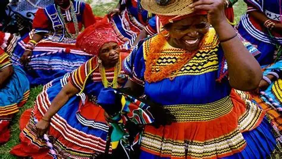

History and Significance
The Lesotho Cultural Festival was created to preserve and promote Basotho traditions and heritage. Over the years, it has grown into a major tourism attraction that draws visitors from across the globe. The festival highlights traditional music which includes use of traditional instruments such as drums, lesiba, sekhankula and others, dances which includes performances like mokhibo(woman's dance) ndlamo (men's dance), traditional clothing like basotho blanket called seanamarena being the most iconic attire and others, and storytelling. It plays an important role in educating younger generations about their culture.
The significance of this event goes beyond entertainment as it also supports cultural pride and national identity. It includes cultural preservation, tourism development, economic benefits and social unity. It provides opportunities for local artists and entrepreneurs to gain exposure. Tourists learn about the history and lifestyle of the Basotho people in an engaging way. This makes the festival both educational and enjoyable.
Target Tourists
- International tourists
- Local families
- Students and researchers
- Music and culture lovers
